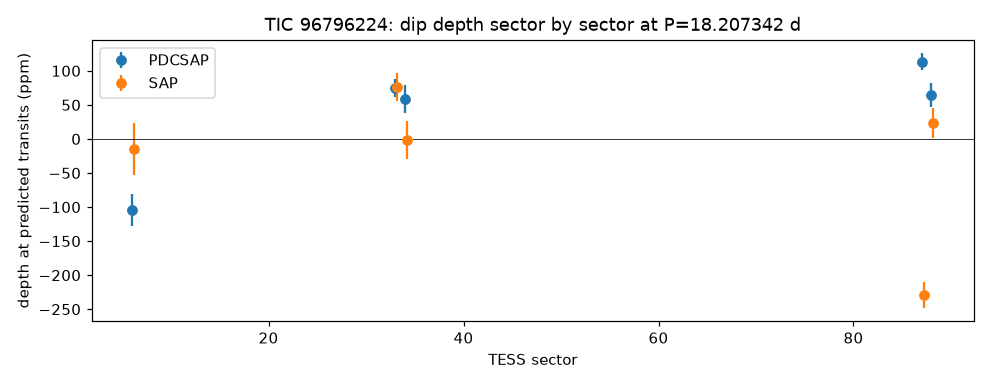
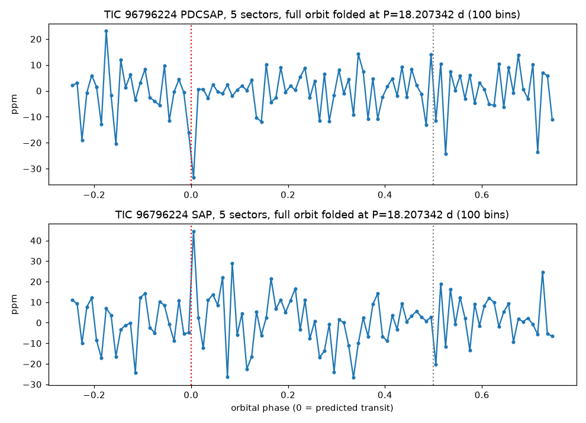

TRANSMISSION #020 ·
Deep dive on TIC 96796224: the 18-day dip doesn't come back
Follow-up on TIC 96796224 (HIP 33705), from the fifth sector 88 draw.
The batch search, using four sectors (2020-21 and 2024-25), found an 84 ppm dip every 18.207 days, three hours long, six transits, signal-to-noise 11.2. The star is a bright F dwarf, about 6,500 K and 1.3 times the Sun's size, so the dip would mean something about 1.3 Earth radii across. Odd and even dips were 98 and 77 ppm, close enough, and nothing showed at the halfway point. The detection score was only 9.5, and the periodogram climbs toward long periods, which makes an 18-day peak easier to fake.
The deep TLS search added sector 6 from 2018, five sectors in all, and came back empty. Its best peak was at 13.66 days with a score of 7.6 and signal-to-noise 6.4, both below the bar. The 18.2-day signal was not recovered.
Kepler then measured the dip directly at the predicted times, sector by sector. In the cleaned light curves the depths were 75, 58, 114 and 65 ppm in the four batch sectors, and -104 ppm in sector 6, a brightening. In the raw light curves they were 76, -2, -230 and 23 ppm, plus -15 ppm in sector 6. A real transit would show up at a steady depth in both. Folding the whole orbit shows a single narrow low point at the predicted time and nothing else.


Neighbours don't explain it. Gaia lists 82 sources within 90 arcseconds, all at least 8.7 magnitudes fainter. The brightest, 77 arcseconds away, would need to lose 25% of its light to fake the dip; the next ones at 58 and 66 arcseconds would need 34% and 39%. Their FFI light curves are too noisy, sitting next to a 6th-magnitude star, to test. Gaia shows the star itself as single (RUWE 0.93, no binary solution), and ExoFOP and the NASA Exoplanet Archive have no TOI, CTOI or planet on it or nearby.
With no recovery in the deep search and depths that wander sector to sector and vanish in the raw flux, this looks like noise or a processing leftover. Marked probably false positive.
Full pipeline report
Planet-hunter report
Generated 2026-11-03 08:02 UTC by hunt.py v1.0.0.
Stars processed
1 stars total: 1 no_signal
Signals found: 0 (0 new and passing vetting, 0 new but failing vetting, 0 matching known planets/TOIs/CTOIs).
New candidates that passed the automatic checks
These are the ones to look at first. Passing the automatic checks does not make something a planet. Open each plot and follow the eyeball checklist in BOT_BRIEF.md before telling anyone about it.
none
New signals that failed vetting
Usually eclipsing binaries, stellar variability or instrument noise. Worth a glance, rarely more.
none
Signals matching something already catalogued
A good sanity check: if the pipeline recovers known planets, it is working.
none
Stars with errors
none
Caveat
A NEW_CANDIDATE here is only a candidate. Most automatic detections in TESS data turn out to be eclipsing binaries (often a nearby star blended into the same pixels), stellar activity or systematics. Confirming a planet needs pixel-level checks, follow-up photometry, and usually spectroscopy. Promising, carefully checked signals can be shared on ExoFOP (as a CTOI) or with Planet Hunters TESS.